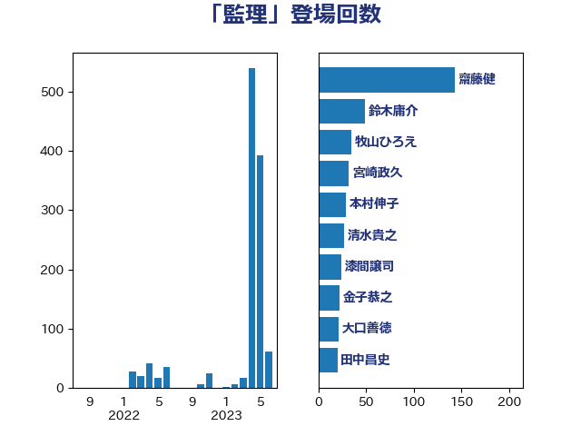

単語「監理」

| 上川陽子 | 自由民主党 | 90 回 |
| 大口善徳 | 公明党 | 25 回 |
| 金子恭之 | 自由民主党 | 22 回 |
| 平井卓也 | 自由民主党 | 19 回 |
| 吉川沙織 | 立憲民主党 | 12 回 |
| 柳ヶ瀬裕文 | 日本維新の会 | 12 回 |
| 中谷一馬 | 立憲民主党 | 11 回 |
| 小林鷹之 | 自由民主党 | 11 回 |
| 小沢雅仁 | 立憲民主党 | 9 回 |
| 笠井亮 | 日本共産党 | 9 回 |
| 伊藤岳 | 日本共産党 | 7 回 |
| 後藤祐一 | 立憲民主党 | 7 回 |
| 柴田巧 | 日本維新の会 | 7 回 |
| 足立康史 | 日本維新の会 | 7 回 |
| 鈴木庸介 | 立憲民主党 | 7 回 |
| 若松謙維 | 公明党 | 6 回 |
| 塩川鉄也 | 日本共産党 | 5 回 |
| 芳賀道也 | 国民民主党 | 5 回 |
| 中川正春 | 立憲民主党 | 4 回 |
| 山東昭子 | 自由民主党 | 4 回 |
| 山添拓 | 日本共産党 | 4 回 |
| 岡本あき子 | 立憲民主党 | 4 回 |
| 武田良太 | 自由民主党 | 4 回 |
| 牧島かれん | 自由民主党 | 4 回 |
| 稲田朋美 | 自由民主党 | 4 回 |
| 菅義偉 | 自由民主党 | 4 回 |
| 串田誠一 | 日本維新の会 | 3 回 |
| 吉田宣弘 | 公明党 | 3 回 |
| 守島正 | 日本維新の会 | 3 回 |
| 櫻井周 | 立憲民主党 | 3 回 |
| 細田博之 | 自由民主党 | 3 回 |
| 高橋千鶴子 | 日本共産党 | 3 回 |
| 井野俊郎 | 自由民主党 | 2 回 |
| 寺田学 | 立憲民主党 | 2 回 |
| 小森卓郎 | 自由民主党 | 2 回 |
| 山口俊一 | 自由民主党 | 2 回 |
| 松下新平 | 自由民主党 | 2 回 |
| 永岡桂子 | 自由民主党 | 2 回 |
| 福山哲郎 | 立憲民主党 | 2 回 |
| 福岡資麿 | 自由民主党 | 2 回 |
| 福島みずほ | 社会民主党 | 2 回 |
| 藤井比早之 | 自由民主党 | 2 回 |
| 西岡秀子 | 国民民主党 | 2 回 |
| 赤羽一嘉 | 公明党 | 2 回 |
| 高木毅 | 自由民主党 | 2 回 |
| 井上信治 | 自由民主党 | 1 回 |
| 古川禎久 | 自由民主党 | 1 回 |
| 吉田忠智 | 立憲民主党 | 1 回 |
| 岩渕友 | 日本共産党 | 1 回 |
| 岬麻紀 | 日本維新の会 | 1 回 |
| 岸田文雄 | 自由民主党 | 1 回 |
| 川合孝典 | 国民民主党 | 1 回 |
| 斉藤鉄夫 | 公明党 | 1 回 |
| 新谷正義 | 自由民主党 | 1 回 |
| 日下正喜 | 公明党 | 1 回 |
| 本村伸子 | 日本共産党 | 1 回 |
| 杉久武 | 公明党 | 1 回 |
| 梶山弘志 | 自由民主党 | 1 回 |
| 沢田良 | 日本維新の会 | 1 回 |
| 田畑裕明 | 自由民主党 | 1 回 |
| 石川博崇 | 公明党 | 1 回 |
| 穀田恵二 | 日本共産党 | 1 回 |
| 若宮健嗣 | 自由民主党 | 1 回 |
| 萩生田光一 | 自由民主党 | 1 回 |
| 道下大樹 | 立憲民主党 | 1 回 |
| 階猛 | 立憲民主党 | 1 回 |
| 高野光二郎 | 自由民主党 | 1 回 |
| 鬼木誠 | 立憲民主党 | 1 回 |